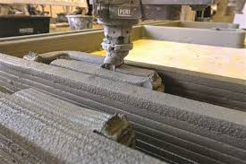

Impresiones en 3D
La impresión 3D es un grupo de tecnologías de fabricación por adición donde un objeto tridimensional es creado mediante la superposición de capas sucesivas de material. Las impresoras 3D son por lo general más rápidas, más baratas y más fáciles de usar que otras tecnologías de fabricación por adición, aunque como cualquier proceso industrial, están sometidas a un compromiso entre su precio de adquisición y la tolerancia en las medidas de los objetos producidos. Las impresoras 3D ofrecen a los desarrolladores de un producto la capacidad para imprimir partes y montajes hechos de diferentes materiales con diferentes propiedades físicas y mecánicas, a menudo con un simple proceso de ensamble. Las tecnologías avanzadas de impresión 3D pueden incluso ofrecer modelos que pueden servir como prototipos de producto.
Desde 2003 ha habido un gran crecimiento en la venta de impresoras 3D. De manera inversa, el coste de las mismas se ha reducido. Esta tecnología también encuentra uso en campos tales como joyería, calzado, diseño industrial, arquitectura, ingeniería y construcción, automoción y sector aeroespacial, industrias médicas, educación, sistemas de información geográfica, ingeniería civil y muchos otros.
Las impresiones de hoy
En la actualidad el proceso de impresion en 3d tiene una enorme variedad de aplicaciones, tanto en hambitos industriales como educativos, investigacion, desarrollo, hobbies y muchos mas. Hoy en día disponemos de una gran variedad de tipos de impresoras y de materiales en los que podemos imprimir. Aqui les mostramos algunos ajemplos como las impresoras de concreto, la de comida, la de chocolate,la de metal y finalmente la de plastico.

Impresoras FDM
Esta tecnologia cuyas siglas en inglés significan Fused Deposition Modeling, (modelado por deposición fundida), es a la que nos dedicamos.
algunas de las ventajas de este tipo de impresiones son los materiales con los que podemos trabajar. Debido a esta variedad es que podemos realizar una gran cantidad de proyectos ya que podemos elejir como materia prima distintos materiales en filamento, como por ejmplo: PLA, ABS, PET-G, NYLON, MADERA, BRONCE, FLEXIGLASS, etc.
proceso de impresion FDM
Esta es una muestra del proceso de impresion FDM, aqui se puede ver desde la preparacion del archivo, (el dibujo de lo que queremos crear), hasta la impresoin de la pieza terminada.
Con este proceso te ofrecemos nuestro servicio de impresion, para que puedas materializar tu idea. Tambien podemos asesorarte, realizar tu diseño y darte las mejores opciones en materiales y costos. si gustas podes revizar nuestras ofertas, e impresiones ya realizadas, siempre vas a encontrar los precios actualizados. De esta manera podes personalizar tu regalo, souvenir, o merchandising para tu empresa.
"Usos mas comunes de piezas impresas"
- Arte y decoracion para el hogar
- Creacion de gabinetes para tus proyectos de electronica
- Creacion de maquetas
- Creacion de personajes
- Fabricacion de piezas de repuestos
- Prototipado de proyectos
- Merchandising
- Accsorios de bijouterie